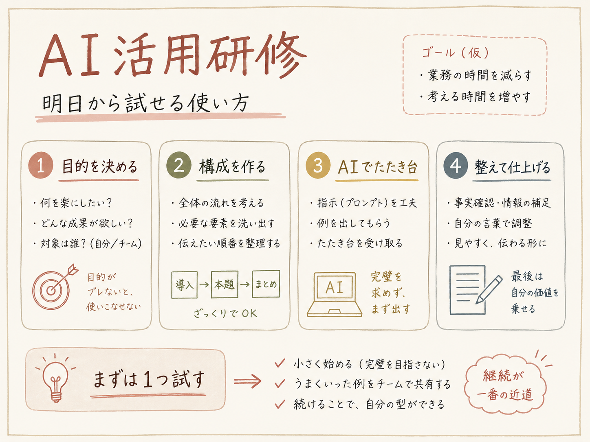

「AIを活用しましょう」と言われたとき、こう思いませんか。
この2つの問いは、どちらもAIの側から始まっています。AIの側から入ると、活用方法の一覧を見て、その中から自分に当てはまるものを探すことになります。数が多いわりに、自分の仕事とはなかなかつながりません。
私は普段からAIを使うほうですが、差があるとすれば、スキルではなく考え方だと思っています。やっていたのは、その逆でした。AIではなく、業務のほうから入る。「何をしたいか」を先に決めて、そこから「それをAIでどう実現するか」を考えています。
ここでいう「やりたいこと」は、新しく何かを始めることではありません。新しいことを始めようとすると、それ自体が負担になってしまいます。今やっている作業の目的を、もっと効果的に、もっと効率よく達成できないか。考えるのはそれだけです。
今回は、その考え方をもとに、実際にどう考えたかを「やり方」「組み合わせ」「事例」の3つに分けて書きます。読み終えたときに、「で、どうすればいいの」で止まることが減っていればと思います。
01 できることは、使う人によって変わる
私は、「AIは基本的に何でもできる」と思っています。
もちろん、実際にはできないこともあります。ただ、やってみてできなかったときに「やっぱり無理か」で終わらず、失敗した原因を分析して、「じゃあ、どうすればできるんだろう」と考える。違いはそこだけかもしれません。
「だいたいできる」と思っていると、自然と「何をしたいか」から考えるようになります。
今やっている作業の中で、「これ、面倒だな」「これができたらいいのに」と思っているものを一つ思い浮かべてみてください。AIでできるかどうかは、この時点では考えなくて大丈夫です。
仕事のことでなくても構いません。むしろ最初は、趣味や家のことでもいいと思います。業務でいきなり使おうとすると、失敗できないぶん、手が止まりやすいからです。
02 考えることは1つ、切り口は3つ
考えることは1つだけです。「どうすれば、もっと効果的に、もっと効率よくできるか」。その答えを探す切り口が、3つに分かれます。順番に全部やる必要はありません。①で足りれば、そこで終わりです。
もっと効率よくできるか
ここからは、「AIでPowerPointを作りたい」を例に、実際に何をどう考えたかを書きます。先ほど思い浮かべたものに置き換えながら、読んでみてください。
① やり方 何をすれば良くなるか
いきなり「AIでどうやるか」を考えると、AIの機能に発想が引っ張られて、アイデアが広がりません。先に考えるのは、どうすればその目的を効果的に達成できるかです。この時点では、AIをどう使うかは考えません。
コツは1つだけです。自分のスキルや知識を、いったん計算に入れないこと。「自分はデザインができないから」「文章が苦手だから」と先に線を引くと、そこで発想が止まります。考えるのは、「どうなっていれば良いか」だけです。
資料作成なら、「読み手の関心がどう動くか」を踏まえて構成を組む。AIを使っても、ここは変わりません。
私が自分で決めたのは、2つだけです。誰に向けたもので、読み終えたときにどうなっていてほしいか。それと、全体をどういう流れで見せるか。手法をいくつか知っていたので、それを使いました。
実のところ、「研修をするので、資料の流れを考えて」といったシンプルな指示でも、それっぽいものは作れます。ただ、AIが作ったもの自体は良くても、目的には沿っていない。それでは意味がありません。
だから、「この目的を達成するには、どういう情報が必要なのか」を、自分が作る前提で整理してから指示を出します。最終的なアウトプットをどうしたいのか。その抽象的な部分は、自分で持っています。
分からないときの2つの手
どういう要素が必要なのか、そもそも分からないこともあります。経験のない領域なら、そのほうが普通です。そんなときには、2つの手があります。
1つは、調べること。 ただし、調べる前に「そもそも今、何をしているんだっけ」「この作業の目的は何だっけ」と確認します。目的を整理したうえで、それを達成するために効果的な手段や方法は何か、そのやり方を調べます。
いきなり「資料作成のコツ」を調べると、目的とは関係のない、上手いやり方まで集まってしまいます。
調べるのは、AIの使い方よりも、その作業自体のやり方です。業界で実際に使われている工程や技法。そのとき、説明だけでなく用語で覚えておくと効果的です。
「目的が何で、誰に向けて、どんな内容で」と毎回説明するよりも、「要件定義書を作りたい」の一言のほうが早い。用語を知っているだけで、指示を短くできます。
もう1つは、分からないまま渡してしまうこと。 「目指したい状態」と「今の状態」。その2つを書いて、「どこに問題がありそうか、どうすればいいか」を聞きます。理想と現状を整理できれば、問題の特定と改善策はAIに提案してもらえます。
任せる部分
ここまでは、AIをどう使うかを考えていません。やり方が決まってから、そのどこをAIに任せるかを考えます。
私が任せたのは、そこから先です。どういう感じで書きたいかだけを整理して渡し、あとの部分はいい感じに補完してもらう。そうやって下書きを作ってもらっています。「この部分は、こういうスライドにしたい」とだけ添えて、細かい中身までは書きませんでした。
「こういうものを作りたい」という大枠だけを決めて、具体的な書き方や詳しい内容はAIに書いてもらったほうが、効率が良く、クオリティも高くなると思っています。出てきたものを見ながら、「ここはこうしたい」を足していきます。
もう1つ任せたのが、自分以外の視点で見てもらうことでした。手法を知っていても、自分で書いたものがそのとおりになっているかは、自分では判断しにくい。ズレが見えないからです。
「〜という目的で、〜に向けて作っていて、今は〜という構成になっているんだけど、構成や具体的な内容についてどう思う？」
ここでも、前提を先に渡します。目的に照らして判断してもらうためです。
返ってきた提案は、そのまま全部使うのではなく、選んで取り入れました。知識があるほど的確に選べますが、知識がなくても始められます。
② 組み合わせ 何を使って、どう分けるか
組み合わせといっても、大がかりなものとは限りません。今の作業に何を足すか、何を分けるか。それだけでも組み合わせです。
ポイントは、1つのAIで全部やろうとしないことです。
「〜したいんだけど、どういうツールや手段を使って、どんな流れにするのがいいかな？」
私の場合、最初は「何を書くか」を整理してもらったAIに、そのままPowerPointまで作らせようとしました。しかし、配置や色味がどうしてもうまくいきませんでした。
そこで、「デザインの下書きだけ、別で作れないか」と考えました。画像生成でラフを1枚作り、それを見せながら組み直す。工程を1つ増やしただけで、そのまま使える形になりました。

「惜しいな」で済むときは、伝え方を変えれば、だいたい解決します。何度か条件を変えて試しても「全然違うな」が続くときは、そもそも、その作業がそのAIに向いていないのかもしれません。そのときは、指示ではなく、組み合わせのほうを変えます。
ここから先は、何度か試してみたあとの話です。
AIの使い方も、チャット欄でやり取りするだけではありません。
「やりたいことに応じて履歴やデータを管理したい」「AIの機能を拡張したい」といった場合には、これらの機能を使ってみると良いです。
同じ作業を何度も繰り返すなら、毎回ゼロから頼まなくて済むように、目的や手順、守りたいルールをまとめて登録しておく「スキル」機能を使うところまで進むこともあります。ただ、最初からそこまでやる必要はありません。
③ 事例 誰かがすでにやっていないか
①と②は、自分の中で考える作業です。思いつくものがないと、そこで止まってしまいます。
思いつかないときは、調べます。調べる対象は、AIに何ができるかではありません。同じことをやった人が、どうやったかです。
「AIを使って〜したいんだけど、実際にやった人の事例を調べて。どういう手順で、何を使ったのかと、うまくいかなかった点や、途中で変えたところも知りたい」
最後の一文が大事です。成功談だけを集めても、あまり使えません。「ここで詰まって、こう変えた」という情報のほうが、実際に試すときの判断材料になるからです。
この記事を書くときに、実際に調べてみました。出てきた事例に共通していたのは、次のような流れです。
判断は人、生成はAI。AIが担うのは4工程のうち1つだけでした。
私がやっていた方法と、ほぼ同じでした。自分の判断が妥当だったことを確認できたわけですが、それだけではありません。
1つは、検討すらしていなかった選択肢が見つかったこと。もう1つは、いきなり全部を作らず、「同じ原稿で数枚だけ作って比べる」という進め方です。これは、私にはなかった発想でした。
調べれば、ある程度妥当なやり方が手に入ります。自分の判断の裏が取れて、自分にはなかった発想も見つかる。事例を調べる価値は、その2つです。
ここまでは、「人がどうやったか」を調べる話でした。AIそのものを調べたくなったときは、情報の細かさに気をつけてください。
AIごと、モデルごとの性能差や、「こんな作業に使えます」という活用方法の一覧を調べると、量が多すぎて、かえって手が止まります。それよりも、世の中にどんなAIがあるのかを、大まかに見ておくほうが効果的です。
非エンジニアでも、AIと会話しながら簡単なアプリやツールを作り、作業を効率化することが選択肢に入るようになっています。
私も詳しいわけではありませんが、これくらいで十分だと思っています。「宣伝したい」と思ったときに、動画や音楽が候補に入るかどうかは、ここで決まります。知らなければ、その選択肢は最初から存在しないからです。
AIが挙げる事例には、裏が取れないものも混ざります。やり方の参考として見る分には良いですが、事実として引用するなら、元の情報を確認する必要があります。
06 できるかどうかは、自分で決めなくていい
いちばんもったいないのは、「AIにそんなことができるわけない」と自分で判断して、聞かずに終わることだと思っています。
できるかどうかは、
AIが答えます。
やってみるときのプロセス
全部やる必要はありません。手順3で足りることも多いです。
「これ、AIでうまくやる方法ないかな」くらいの軽さで十分です。失敗しても困らないところで何回か試して、慣れてから業務に持ち込むほうが、たぶん早いと思います。
何度か試していると、AIに何ができるかの解像度が勝手に上がっていきます。そうなると今度は、「あの作業でも使えるんじゃないか」「こういう使い方もできるんじゃないか」が、自分から出てくるようになります。
新しい活用方法は、そこから始まります。
あとは、最初に思い浮かべた作業を1つ。手順3まででも十分です。